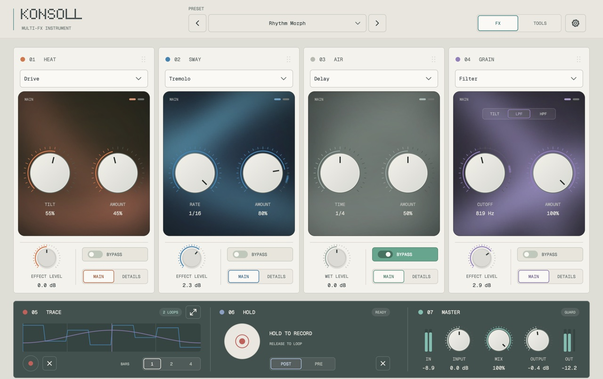

FLOATING
Memory instrument

Capture a recent moment, shape how it is remembered, place it into atmosphere. Tape, Stretch and Choir change how the phrase sounds; the original stays untouched.
Fløa · audio instruments
FLOATING keeps hold of what you just played. KONSOLL runs your sound through four modules that move with the track. Both are Audio Unit and VST3 plug-ins, built and tuned by one person.
01Choose an instrument
Capture a recent moment, shape how it is remembered, place it into atmosphere. Tape, Stretch and Choir change how the phrase sounds; the original stays untouched.

Four effect modules, HEAT, SWAY, AIR and GRAIN, each playing one of five effects. Trace loops your knob movements in time with the host, Hold loops a moment of audio, and Scenes morph between sounds.
02KONSOLL
Each module is one card with one effect at a time: a main control, AMOUNT for how much you hear, and a second page for the finer controls. Put them in any order, or wire them as two paths, centre and sides, or a feedback loop.
Everything can move on its own. Trace records the knobs you turn and loops them over one, two or four bars. Hold records audio and loops it. A sidechain from another track can move any control.

Drive and colour.
Drive · Fuzz · Warm · Wail · Bloom
Movement and pitch.
Twin · Vibrato · Tremolo · Phaser · Shift
Echoes and space.
Delay · Reverb · Reverse · Spool · Splice
Filter, tape and texture.
Filter · Tape · Warp · Press · Static
One installer for Audio Unit and VST3, for Apple Silicon Macs on macOS 11 or later. Like FLOATING it will be free and unsigned, with an install guide for the one Gatekeeper prompt. A Windows VST3 comes later.
04Support and contact
Both instruments are made by one person. Bug reports, confusion and “this should work differently” are equally welcome; support goes straight into the time this takes.